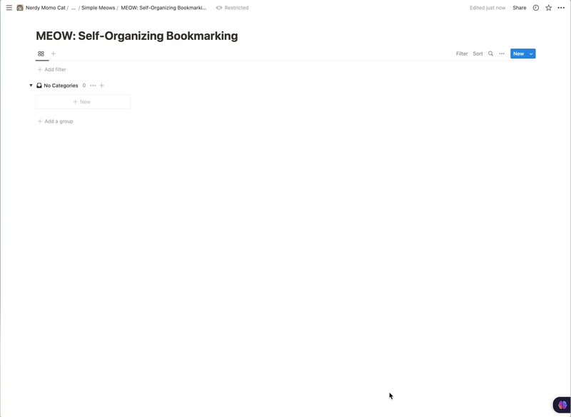

Streamline Your Bookmark Management w/ Notion and AI
Introduction
I absolutely despise the tedious task of manually tagging everything in a Bookmark Manager. It’s just an extra step that my ADHD mind struggles to keep up with. I mean, seriously, who has the time and patience for that?!
As a result, my bookmark inbox ends up becoming a chaotic mess with over 200 entries. It’s overwhelming and counterproductive, to say the least. But fear not, my fellow overwhelmed minds, there’s a solution on the horizon - automation!
With the power of automation, we can streamline our bookmark management process and save ourselves from the overwhelming task of manual tagging. It’s like having a personal assistant that takes care of all the grunt work for us. And let me tell you, it’s a game-changer.
How?
So, you might be wondering, what exactly does this automation do to streamline our bookmark management woes? Let me break it down for you:

Extracts content of the page
Firstly, it extracts the content of the page you’re bookmarking. It ensures that the content is fully loaded and not hindered by any pesky JavaScript issues. This way, you can rest assured that you’re capturing the complete essence of the page.
Takes screenshot of the page using Screenia by @s_badaoui
Next, it takes a screenshot of the page using the nifty tool called Screenia by the talented @s_badaoui. This comes in handy when the automation couldn’t fetch the content of the page earlier. In such cases, it cleverly applies OCR (Optical Character Recognition) on the captured image to extract the necessary information.
Call OpenAI API
But wait, there’s more! The automation then calls the OpenAI API, which works its magic and provides a JSON file containing a summary of the page, along with relevant tags and categories. These tags and categories are selected from a pre-defined list, ensuring that your bookmarks are organized and easily searchable.
Add screenshot to dropbox
Now, here comes the cool part. The automation adds the screenshot of the page to Dropbox, making it easily accessible and shareable. It then retrieves the URL of the uploaded image, so you can conveniently view and reference it whenever needed.
Parses the information
Last but not least, the automation parses all the gathered information and seamlessly adds it to Notion. Notion acts as your centralized hub for bookmark management, allowing you to effortlessly categorize, search, and access your bookmarks with just a few clicks.
Run this on your own
If you want to run this on your own, you need:
iOS/MacOS (because this is dependent on shortcuts app)
Bookmarks Database duplicated from the link below, shared with integration and then get its database ID
Free Actions app by @sindresorhus [On both MacOS and iOS]
Connect your dropbox account in shortcuts (should hopefully prompt itself)
However, like with any automation, there are a few issues to be aware of. Let’s take a look at them:
One downside is that this automation may take some time to run. So, if you’re using it on iOS and your macOS device is in the background, you might see a spinner indicating that the process is still ongoing. Just keep in mind that it’s best not to add two bookmarks within a minute to avoid any potential conflicts.
Another issue to be mindful of is the rate limit of Screenia. While it’s a fantastic tool for taking screenshots, it does have its limitations. If you’re adding bookmarks at a rapid pace, you might run into the rate limit of Screenia. In such cases, you may need to wait for a while before the automation can successfully capture the screenshots.
Ah, the dreaded iOS permissions. Unfortunately, iOS has a tendency to bombard us with permission requests, and this automation is no exception. Each time you run it, you may have to deal with those annoying permission prompts. It can be quite frustrating, but don’t worry, you’re not alone in this struggle.
Despite these minor hiccups, the benefits of streamlining your bookmark management with Notion and AI far outweigh the inconveniences.
And finally, get the Apple Shortcut here.
Support Me
If you do decide to give this automation a try, I would be incredibly grateful for your support. Additionally, if you find this automation helpful and would like to show your appreciation, you can also support me by buying me a coffee. Your support would not only help fuel my caffeine addiction but also motivate me to create more useful tools in the future.